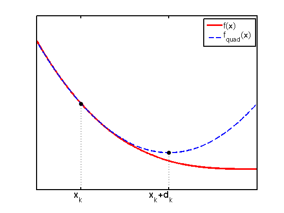

Illustration of a function g and its second order approximation.
function newtonsMethodMinQuad
figure(); hold on;
xmin = -5; xmax = 0;
ymin = -20; ymax = 150;
domain = xmin:0.01:xmax;
f = @(x) -x.^3;
Xk = -4;
f1 = @(x) -3*x.^2;
f2 = @(x) -6*x;
t = @(x) f(Xk) + f1(Xk)*(x - Xk) + (1/2)*f2(Xk)*(x - Xk).^2;
[val, minNDX] = min(t(domain));
minimum = domain(minNDX);
h1 = plot(domain, f(domain), '-r' , 'LineWidth', 3);
h2 = plot(domain, t(domain), '--b', 'LineWidth', 2.5);
legend([h1, h2], {'f(x)', 'f_{quad}(x)'}, 'Location', 'NorthEast');
plot(Xk, f(Xk), '.k', 'MarkerSize', 25);
plot([Xk, Xk], [ymin, f(Xk)], ':k');
plot(minimum, t(minimum), '.k', 'MarkerSize', 25);
plot([minimum, minimum], [ymin, t(minimum)], ':k');
annotation(gcf,'textbox' , [0.25 0 0.09946 0.11] , ...
'String' , {'x_{k}'} , ...
'FontSize' , 18 , ...
'FitBoxToText' , 'off' , ...
'LineStyle' , 'none' );
annotation(gcf,'textbox' ,[0.515 0 0.09946 0.11] , ...
'String' ,{'x_{k}+d_{k}'} , ...
'FontSize' ,18 , ...
'FitBoxToText' ,'off' , ...
'LineStyle' ,'none' );
axis([xmin, xmax, ymin, ymax]);
set(gca, 'XTick' , [Xk, minimum], ...
'XTickLabel' , {'', ''} , ...
'YTick' , [] , ...
'FontSize' , 16 , ...
'Box' , 'on' , ...
'LineWidth' , 2 );
printPmtkFigure('newtonsMethodMinQuad');
end
